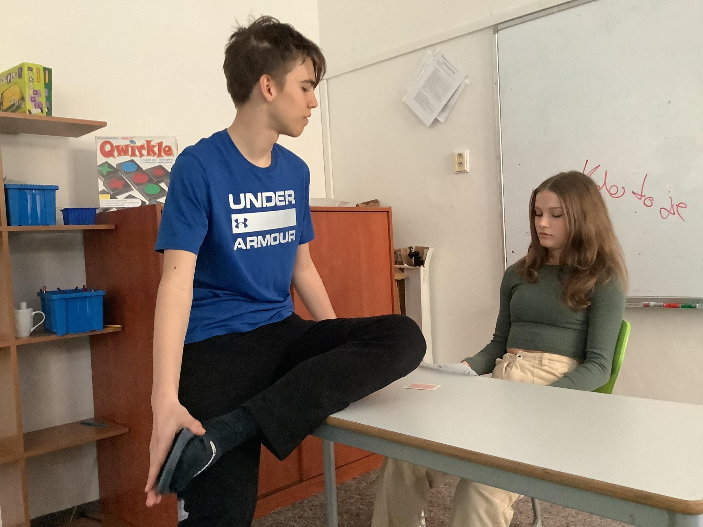
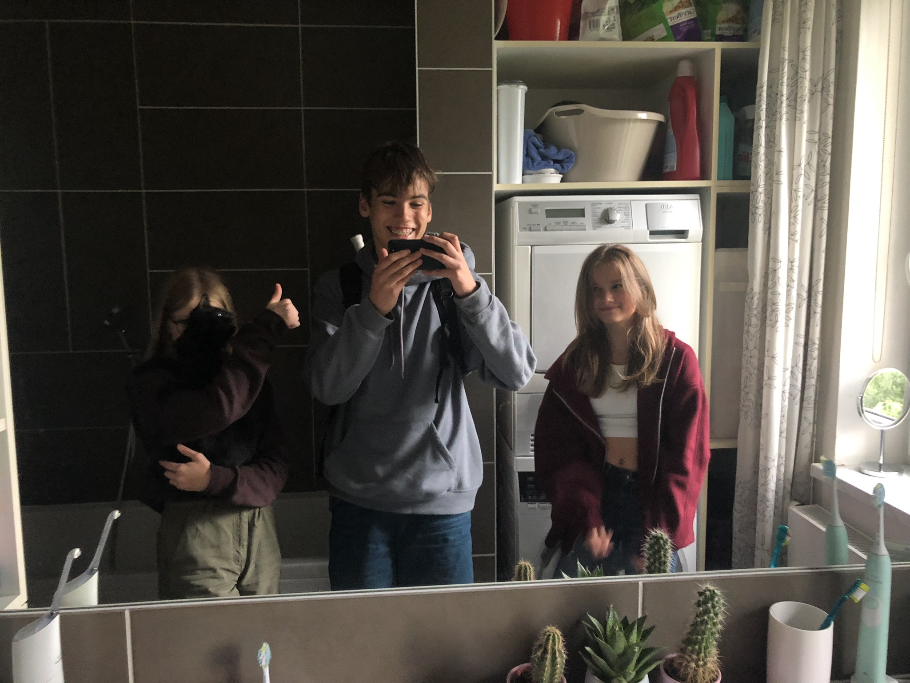
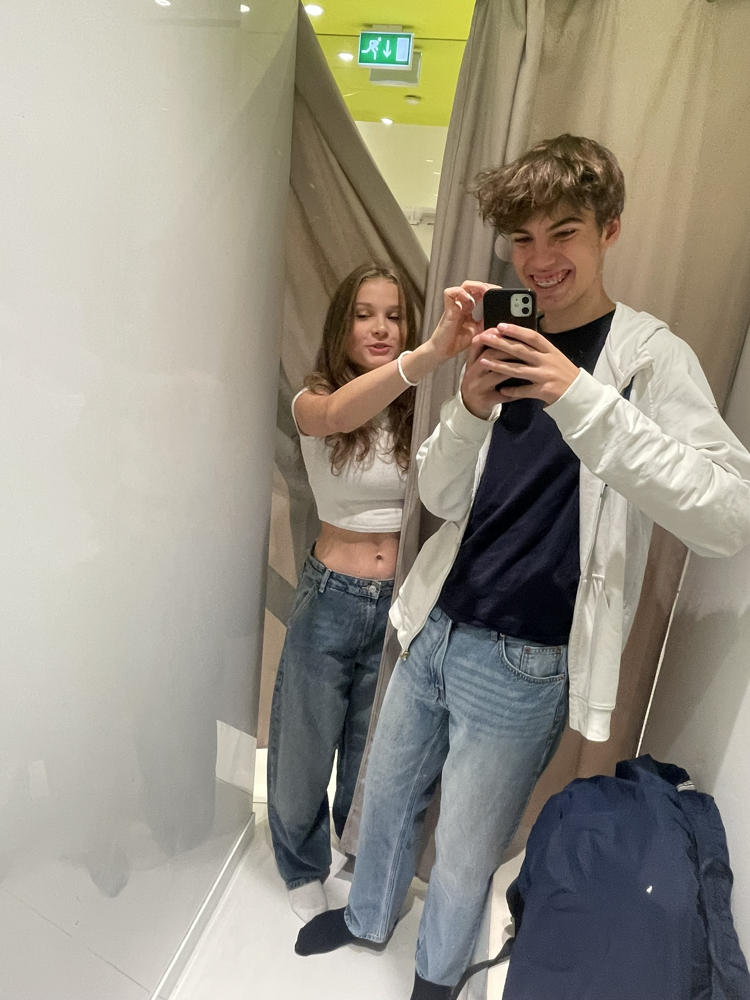
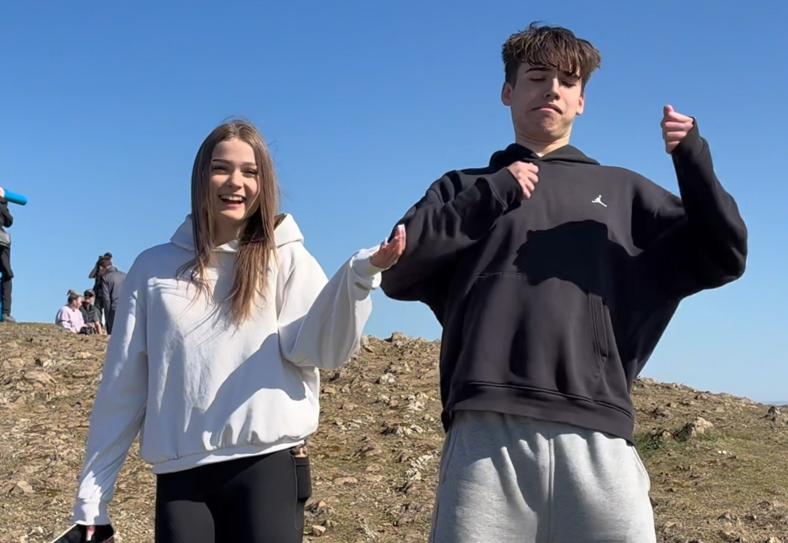
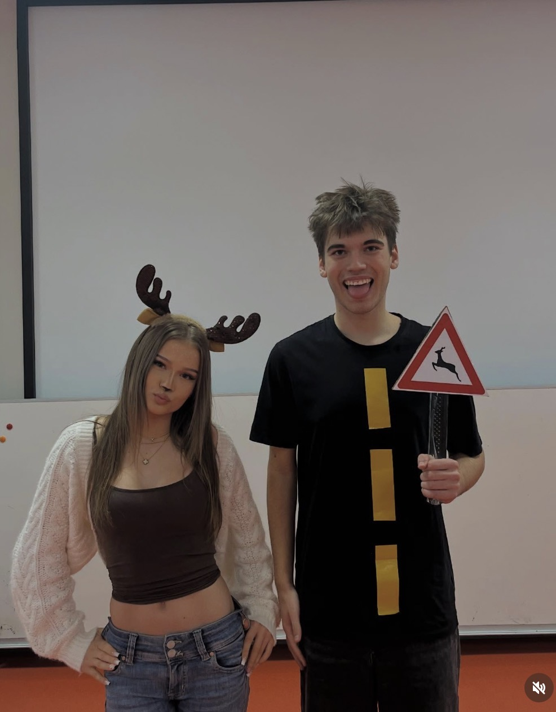
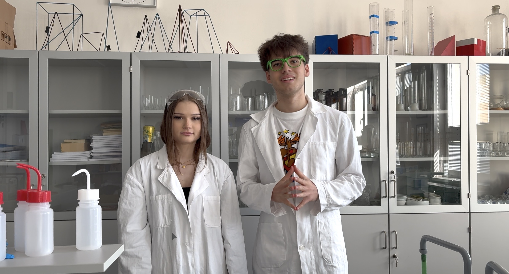

Naše Cesta
Jak vznikl náš projekt – krok za krokem.

Krok 1
Poprvé jsme se začali více bavit.

Krok 2
Návštěva bytu Kiki abychom prokonzultovali projekt.

Krok 3
Na nákupech abychom ze sebe dostali stres z projektu.

Krok 4
Zajížďka do Anglie, abychom se sešli s Newtonem.

Krok 5
Halloween je Halloween co k tomu dodat :).

✦ Finále
Dokončení našeho dlouholetého projektu. Bylo to krásné a bylo toho dost.